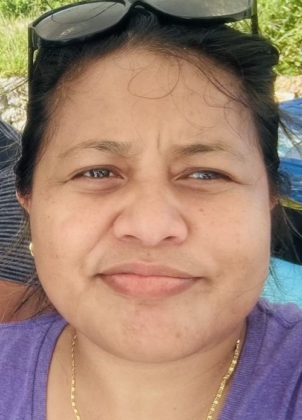

Uea Tibaua | WDD130
I'm Uea Tibaua from Kiribati, currently living in Pohnpei, one of the Federated States of Micronesia. I like playing tennis, soccer, and volleyball and have been practicing in my home island, Kiribati. Also, I like to do home baking breads with coconut milks. One of my favorite foods is fish and breadfruits.